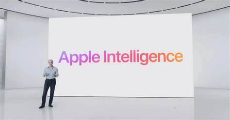

Upcoming Apple updates for the iPhone and the potential future of the iPhone
❮ ❯During the WWDC24, major updates were announced for the iPhone, such as...
Apple Intelligence Launches Later This Year, with the addition of ChatGPT!!
Apple is implementing a AI into the newer phones later this fall specifically only on iPhone 15 Pro and iPhone 15 Pro Max. This AI is built-in the iPhone, kind of like Siri, meaning it can read out notifications, rewrite text, summarize pages in a text, and a very neat Smart Reply feature that lets users quickly respond to an email or iMessage. It can even generate images, like a sketch! Something that Apple users have also definitely wanted for awhile is a Magic Eraser for images to remove unwanted objects, though note this has been released on other devices. If you're not a fan of Apple's AI, not a problem, with the addition of ChatGPT! This is a great option and idea, as some may prefer ChatGPT's version of the AI, and it allows for a much bigger space for customization, something Apple is not known for, compared to Androids.

Siri Makeover?!
To be honest, I can remember being younger using my parents iPhone and using Siri, and to be honest, nothing has really changed over the years. Each year, Siri gets more and more outdated, to the point where people dont want to use it. I mean, it is kind of useless. I sometimes ask Siri to do things, instead of me having to do them, and by the time I say what I want it to, Siri waits and finds an answer, and by the time it says something, sometimes it can't even do the function! I could've already done it by myself by now! The new Siri is leveraging new AI features. They are aswell adding the Siri voice to sound more natural and more human I suppose, with additional updates for Siri in the future.

iOS 18
Obviously there's some new AI features with the new iOS 18 update coming out on devices like the iPhone 15 later this year. Though there's some non-AI features aswell.
With iOS 18, you can now better customize your home screen by placing apps along the bottom or side of the home screen. App icons are customizable too, with the ability to customize the colors of the icons and turn on a dark mode, another implementation of customization by Apple. The control center is also getting a remake, with you being able to customize home controls, and more. In the showcase, Developpers actually used expanded controls showed off car controls from Ford, which could just be a bit of a teaser for the public in the near-future.
Some privacy updates aswell; Apple will now offer the ability to lock an app behind Face ID or Touch ID, and a bit of prevention from third-party networks from accessing your Bluetooth and Wifi. Also an Apple Cash feature where you can send money by holding two phones together, and much more.
For more information, click the link down below.
Click Here!

Future ideas for Apple
The future is bright for Apple, with many potential ideas, or ideas to expand on in the future. such as AR features for creating content.
- When iPhone was first released, the whole point was for you to be able to hold the iPhone with one hand, and still be able to your thumbs. Unfortunately, I believe that they've moved away from this memo, as phones constantly get bigger and heavier. This is a reason why we should have the iPhone have the screen fold, or a method of making the be able to get smaller and bigger.
- Same thing with electric cars, the production of the lithium batteries is not great for the environment, and what happens to the lithium batteries after they've been thrown out is also questionable. If we can use exo-friendly materials, this could severely help the climate.
- Just recently, my dad was asking me why is Face-ID won't work. We later on reset his Face-ID, and it worked again. That's great and all, but when Touch-ID was released, it's not like your FingerPrin changes. If we could combine Face-ID and Touch-ID in one, it could improve security, and could offer more variety and more!